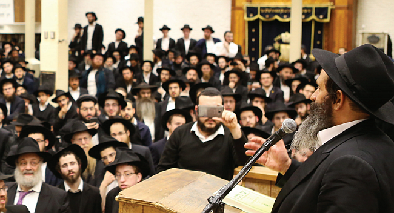

Universal Celebration
By Shraga Crombie

This phenomenon did not begin only upon news of the commutation of his sentence. Throughout the period of the court case, and in the years following as he sat in prison, the entire religious world was unified in support of Rubashkin, attending mass prayer gatherings, signing petitions for his release, exerting pressure and trying to utilize connections for his cause, and in ceaseless prayer and hope.
Perhaps, it is that this story has all of the ingredients of the classic Jewish story: Rubashkin himself – the authentic Jew with full Jewish pride; the judge – the antisemitic gentile reminiscent of the nobleman of the shtetl stories; the jail – the classic pit of imprisonment; and of course, President Trump – the surprise and openly miraculous twist.
In this story, like the stories that we grew up with, a Jew stood proudly against antisemitism and profound Jew hatred, and was sentenced to twenty-seven years for crimes that even if he were guilty as charged, others are only handed sentences that are counted in months. Sholom Mordechai Rubashkin, with his singular personality filled with faith, broadcast to the world the image of a Chassid that every Jew can identify with, the Chassid who does not break, does not lose hope and continues to believe, to smile and even rejoice in the most difficult of circumstances.
* * *
Brief moments after news of the release arrived, the global village roared to life, and the talk all around the world was exclusively about the release of Rubashkin. Video clips recorded every step of this historic night: leaving the prison; arriving home in Monsey; meeting his parents in Boro Park; the dancing in 770, making the blessing of “Who frees the prisoners” in 770, davening at the Ohel, and on and on. It matters not if you were in New York or India, in Kfar Chabad or Russia, everyone was focused on the tribal electronic news feed, and shared the experience of the amazing and unifying celebration.
Nobody was really expecting Rubashkin to be freed last week. True, his wife never gave up hope and even recounted the week before that she has special Shabbos clothes that she keeps for him to wear immediately upon his release, but despite this unwavering faith, the specific moment still came as a complete surprise to everyone. One moment prior, he was a prisoner with nineteen more years in jail ahead of him, and a moment later he was a free and happy man.
There was nobody in this world who was waiting for this exact moment; 5 pm on Wednesday, Zos Chanuka 5778. When the official announcement came from Washington, it stunned every single person without exception. This comes to teach us what exactly our Sages were referring to when they spoke of “Hesech HaDaas” (averted consciousness) in regards to Moshiach.
“Suddenly the master will come to his antechamber.”
Beis Moshiach (staff). "Universal Celebration." Beis Moshiach, no. 1099 (December 26, 2017).